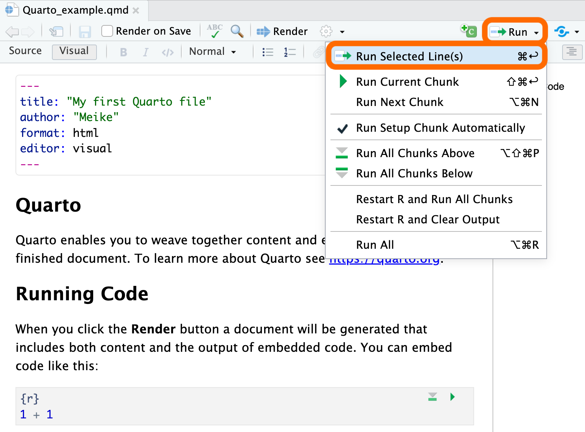
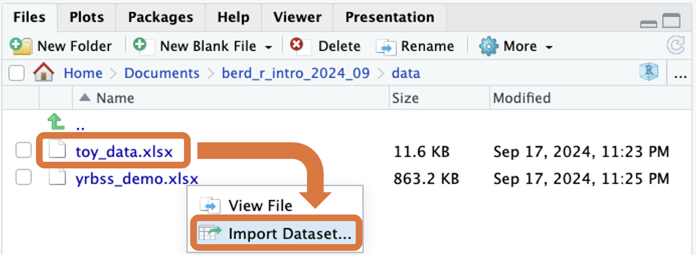

Getting Started in R and Rstudio
Parts 1 & 2
OHSU OCTRI-BERD
2024-09-19
Load files for today’s workshop
Open Google Doc https://bit.ly/berd_r_intro_2024_doc
- Use this to post questions!
- This has all the links in it
Download folder of files using link https://bit.ly/berd_intro_2024_files
Do you have a PC? Need to right click .zip file and select EXTRACT ALL
Do you have a Mac? Just double click .zip file and it will open
These files are hosted on github https://github.com/OHSU-OCTRI-BERD/R_Intro_2024_09
Open the slides file (html) in a web browser:
slides_R_berd_2024.htmlor use the link https://bit.ly/berd_intro_2024_slidesOpen RStudio by double-clicking on the file
berd_r_intro_2024_09.Rproj
Overview
Part 1: 09/19/2024
- Intro to R & RStudio
- Quarto documents & code chunks
- R packages
- Data: loading, viewing
- Summarizing data
- Quantitative
- Categorical
- Data visualizations
- Quantitative: histograms, boxplots, scatterplots
- Categorical: barplots
- Missing data summary
Part 2: 10/03/2024
- Data wrangling
- Sorting data
- Subsetting data (rows, columns)
- Creating new variables in a dataset
- Factor level variables
- Some more data viz (stratifying figures)
- Replacing missing values with another value
- Resources
Introduction to R
What is R?
- A programming language
- Focus on statistical modeling and data analysis
- import data, manipulate data, run statistics, make plots
- Useful for data science
- Great visualizations
- Also useful for most anything else you’d want to tell a computer to do
- Interfaces with other languages i.e. python, C++, bash

For the history and details: Wikipedia
- an interpreted language (run it through a command line)
- procedural programming with functions
- Why “R”?? Scheme inspired S (invented at Bell Labs in 1976) which inspired R since 1st letters of original authors (free and open source! in 2000)
What is RStudio?
R is a programming language
RStudio is an integrated development environment (IDE) = an interface to use R (with perks!)

Open RStudio on your computer (not R!)

RStudio anatomy

Read more about RStudio’s layout in Section 3.4 of “Getting Used to R, RStudio, and R Markdown” (Ismay and Kennedy 2021)
Creating reproducible reports with Quarto

Quarto = .qmd file = Code + text \(\to\) html
.qmd files contain code + markdown syntax which can be “rendered” to other formats (html, pdf, Word, etc)
.qmd file 
html output

Basic Quarto example

1. Create a Quarto file (.qmd)
Two options:
- click on File \(\rightarrow\) New File \(\rightarrow\) Quarto Document…\(\rightarrow\) OK,
- or in upper left corner of RStudio click on
 \(\rightarrow\)
\(\rightarrow\) 


Pop-up window selections:
- Enter a title and your name
- Select
HTMLoutput format (default) - Engine: select
Knitr - Editor: Select
Use visual markdown editor - Click
Create
2. Create a Quarto file (.qmd)
- After clicking on
Create, you should then see the following in your editor window:
3. Save the Quarto file (.qmd)
- Save the file by
- selecting
File -> Save, - or clicking on
 (towards the left above the scripting window),
(towards the left above the scripting window), - or keyboard shortcut
- PC: Ctrl + s
- Mac: Command + s
- selecting
- You will need to specify
- a filename to save the file as
- ALWAYS use .qmd as the filename extension for Quarto files
- the folder to save the file in
- a filename to save the file as
4. Create (render) html file
We create the html file by rendering the .qmd file.
Two options:
- click on the Render icon
 at the top of the editor window,
at the top of the editor window, - or use keyboard shortcuts
- Mac: Command+Shift+K
- PC: Ctrl+Shift+K
- A new window will open with the html output.
- You will now see both .qmd and .html files in the folder where you saved the .qmd file.
Note
- The template .qmd file that RStudio creates will render to an html file by default.
- The output format can be changed to create a Word doc, pdf, slides, etc.
.qmd file vs. its html output
.qmd file
html output
3 types of Quarto content
- Code chunks
- Text, lists, images, tables, links (covered in Quarto workshop)
- YAML metadata (covered in Quarto workshop)

Code chunks
.qmd file
html output
What does a code chunk look like?
An empty code chunk looks like this:
Visual editor

Source editor

Important
Note that a code chunks start with ```{r} and ends with ```. Make sure there is no space before ```.
Enter and run code (1/2)
- Type R code inside code chunks
- Select code you want to run, by
- placing the cursor in the line of code you want to run,
- or highlighting the code you want to run
- Run selected code by
- clicking on the
 button in the top right corner of the scripting window and choosing
button in the top right corner of the scripting window and choosing Run Selected Line(s), - or typing one of the following key combinations:
- clicking on the
 button in the top right corner of the scripting window and choosing
button in the top right corner of the scripting window and choosing | Mac | ctrl + return |
| PC | command + return |
- Where does the output appear?

Enter and run code (2/2)
- Run all code in a chunk by
- by clicking the play button in the top right corner of the chunk
- The code output appears below the code chunk

Note
- The output should also appear in the Console.
- Settings can be changed so that the output appears only in the Console and not below the code chunk:
- Select {{< fa solid gear >}} (to right of Render button) and then Chunk Output in Console.
Create a code chunk
3 options to create a code chunk
Click on at top right of the editor window, or
Keyboard shortcut
| Mac | Command + Option + I |
| PC | Ctrl + Alt + I |
Visual editor: SelectInsert->Executable Cell->R

R Packages: install & load

What are R Packages?
A good analogy for R packages is that they
are like apps you can download onto a mobile phone:

Installing packages
- Packages contain additional functions and data
Two options to install packages:
install.packages()or- The “Packages” tab in Files/Plots/Packages/Help/Viewer window
- Only install packages once (unless you want to update them)
- Installed from Comprehensive R Archive Network (CRAN) = package mothership

Packages used in this workshop
tidyverse: collection of many commonly used packages, including: readr, forcats, ggplot2 (see list here)
For loading datasets:
- readr (a part of tidyverse)
- readxl
For summarizing data
- janitor
- gt
- rstatix
- gtsummary
- naniar
- ggplot2 (for graphing, loaded with tidyverse)
for wrangling data
- dplyr, tidyr (loaded with tidyverse)
Install packages used in this workshop
- Run the code below to install packages:
- It is VERY IMPORTANT that you install these packages in order to run the code for the workshop!
Load packages with library() command
- Use the
library()command to load each required package. - Packages need to be loaded every time you open Rstudio.
- The code to load packages MUST be in your qmd file.
- Tip: at the top of your qmd file, create a chunk that loads all of the R packages you want to use in that file.
- Check to see whether a package has been loaded:
- Go to Packages tab
- If box to left of package name is checked off, then it’s loaded
Load packages used in this workshop
- Run the code below in your R session
Note
- Note that the package names do not need quotes around them when using the
library()function, but they are required when using theinstall.packages()function.
Data basics in R

Dataset example (toy data)
Use Excel to open the dataset
toy_data.xlsxthat is located in the data folder.Terminology
- Rows are usually observations (i.e. a person’s measurements)
- Columns are usually variables or measures
How many observations are in this dataset?
What are the variable types in this dataset?
Import data into R
We can import data from many file types, including .csv, .txt., .xlsx, plus SAS or Stata files
Once imported, R typically stores data as data frames, or tibbles if using the
tidyversepackage.- For our purposes, these are essentially the same, and we will tend to use the terms interchangeably.
- These are examples of what we call object types in R.
Load data from an .xlsx (Excel) file: point & click option
SAVE THE CODE after using the point & click option
- In RStudio’s Files window, open the
datafolder and- then click on the dataset
toy_data.xlsx.
- then click on the dataset
- Select the
Import Dataset...option,- Import Options: Type in
NAin the “NA:” box, and - then click on the
Importbutton on the bottom right of the pop-up window.
- Import Options: Type in

- Copy the code from the console used to load the file into your script (omitting the + sign):
Load data from an .xlsx (Excel) file: code option
- The point and click option used the
read_excelcommand from thereadxlpackage to load the xlsx file. - If comfortable with coding and the data, we can skip the point and click and directly write the code ourselves.
- When loading the dataset, we need to specify where the xlsx file is located, which in this case is in the folder called
data. - No matter which option we use, the code to load the data MUST be in your qmd.
- This code assigns the output of the
read_excel()function (data) into an object namedtoy_data - The
<-is the assignment operator - After loading, the name of the data frame object
toy_datawill be in your Environment tab - To learn more about loading in Excel files, read the readxl intro vignette: https://readxl.tidyverse.org/
- Also check out the readxl cheatsheet (this will download a pdf).
View the toy_data dataset
What are the variable “types”?
| R variable type | Description |
|---|---|
dbl: double |
numbers; also num or int for numbers or integers |
chr: character |
text, “strings” |
fct: factor |
categorical variables stored with levels (groups) |
lgl: logical |
boolean (TRUE, FALSE) |
Rows: 20
Columns: 11
$ id <dbl> 335340, 638618, 922382, 923122, 923963, 925603,…
$ age <chr> "17 years old", "16 years old", "14 years old",…
$ sex <chr> "Female", "Female", "Male", "Male", "Male", "Ma…
$ grade <chr> "10th", "9th", "9th", "9th", "10th", "10th", "1…
$ race4 <chr> "White", NA, "White", "White", "Black or Africa…
$ bmi <dbl> 27.5671, 29.3495, 18.1827, 21.3754, 19.5988, 22…
$ weight_kg <dbl> 66.23, 84.82, 57.61, 60.33, 63.50, 70.31, 45.36…
$ text_while_driving_30d <chr> NA, NA, NA, NA, NA, NA, NA, NA, NA, NA, "0 days…
$ smoked_ever <chr> NA, "Yes", "Yes", "Yes", "No", "No", "Yes", "No…
$ bullied_past_12mo <lgl> NA, NA, FALSE, FALSE, TRUE, TRUE, TRUE, FALSE, …
$ height_m <dbl> 1.550000, 1.699999, 1.779999, 1.680001, 1.79999…Getting to know the dataset
How many rows and columns?
[1] 20 11[1] 20[1] 11What are the variable names?
The Youth Risk Behavior Surveillance System (YRBSS)
Data from the CDC’s Youth Risk Behavior Surveillance System (YRBSS)
- complex survey data
- national school-based survey
- conducted by CDC and state, territorial, and local education and health agencies and tribal governments
- monitors six categories of health-related behaviors
- that contribute to the leading causes of death and disability among youth and adults
- including alcohol & drug use, unhealthy & dangerous behaviors, sexuality, and physical activity
- see Questionnaires
- the data in
yrbss_demo.xlsxare a subset of data in the R packageyrbss, which includes YRBSS from 1991-2013
Practice time! (part 1)
Use R code to answer the following questions.
- Open the Excel file
yrbss_demo.xlsxin the data folder to familiarize yourself with it. - Load the dataset
yrbss_demo.xlsx. Make sure the name of the loaded data isyrbss_data. - What are the column names?
- How many rows and columns are in
yrbss_data? - Which variables are numeric (quantitative)?
- Which variables are character?
Load the YRBSS data
- Open the Excel file
yrbss_demo.xlsxin the data folder to familiarize yourself with it. - This is a larger version of the toy data above, but it is still a subset of the full data.
First look at the data:
Rows: 20,000
Columns: 8
$ record <dbl> 931897, 333862, 36253, 1095530, 1303997, 261619, 926649, 1309…
$ age <chr> "15 years old", "17 years old", "18 years old or older", "15 …
$ sex <chr> "Female", "Female", "Male", "Male", "Male", "Male", "Male", "…
$ grade <chr> "10th", "12th", "11th", "10th", "9th", "9th", "11th", "12th",…
$ race4 <chr> "White", "White", "Hispanic/Latino", "Black or African Americ…
$ race7 <chr> "White", "White", "Hispanic/Latino", "Black or African Americ…
$ bmi <dbl> 17.1790, 20.2487, NA, 27.9935, 24.4922, NA, 20.5435, 19.2555,…
$ stweight <dbl> 54.43, 57.15, NA, 85.73, 66.68, NA, 70.31, 58.97, 123.38, NA,…- After loading the dataset, you will see
yrbss_datain the Data list of the Environment window.
View the YRBSS dataset
- Run the
Viewcommand below within RStudio.- A new tab in the scripting window will appear with the
yrbss_datadataset.
- A new tab in the scripting window will appear with the
- Note that the code chunk specifies
#| eval: FALSEso that this code is not run while rendering the .qmd file.
First 20 rows shown below:
Summarizing data and %>%
- Often we want to summarize columns of data
- Quantitative data and categorical/text data will be summarized differently
- We also introduce the pipe symbol
%>%, which is used to string together commands
The pipe is read “and then” and tells R the next function will be applied to the data on the left side of the pipe:
# A tibble: 6 × 8
record age sex grade race4 race7 bmi stweight
<dbl> <chr> <chr> <chr> <chr> <chr> <dbl> <dbl>
1 931897 15 years old Female 10th White White 17.2 54.4
2 333862 17 years old Female 12th White White 20.2 57.2
3 36253 18 years old or older Male 11th Hispanic/Lati… Hisp… NA NA
4 1095530 15 years old Male 10th Black or Afri… Blac… 28.0 85.7
5 1303997 14 years old Male 9th All other rac… Mult… 24.5 66.7
6 261619 17 years old Male 9th All other rac… <NA> NA NA Summarizing quantitative data
- The
rstatixpackage has a useful function calledget_summary_stats()for quick statistics of quantitative data
# A tibble: 2 × 10
variable n min max median iqr mean sd se ci
<fct> <dbl> <dbl> <dbl> <dbl> <dbl> <dbl> <dbl> <dbl> <dbl>
1 bmi 13542 13.2 53.9 22.3 5.52 23.5 4.99 0.043 0.084
2 stweight 13443 27.7 181. 64.0 19.0 67.5 16.9 0.145 0.285- The
typeoptions aretype = c("full", "common", "robust", "five_number", "mean_sd", "mean_se", "mean_ci", "median_iqr", "median_mad", "quantile", "mean", "median", "min", "max")
Stratified summaries (and more on %>%)
- Now let’s summarize the BMI and weight variables by a strata subgroup.
- We do this with the
group_by()function - Notice that we now have two
%>%:data %>% group_by(...) %>% get_summary_stats(...)- With the pipe symbol
%>%we can string together many commands in the order we want them applied. Example:first tell R what dataset to use,
then have R group (stratify) the data by
sex,and then calculate summary statistics
# A tibble: 4 × 11
sex variable n min max median iqr mean sd se ci
<chr> <fct> <dbl> <dbl> <dbl> <dbl> <dbl> <dbl> <dbl> <dbl> <dbl>
1 Female bmi 6622 13.2 53.3 22.1 5.33 23.3 4.96 0.061 0.119
2 Female stweight 6542 27.7 181. 59.0 15.9 61.7 14.2 0.175 0.343
3 Male bmi 6920 13.2 53.9 22.5 5.51 23.7 5.01 0.06 0.118
4 Male stweight 6901 35.4 181. 69.4 20.0 73.1 17.4 0.209 0.41 Stratify by 2 variables
- We can specify more than one variable within
group_by()to stratify the summaries by more variables
# A tibble: 20 × 12
sex grade variable n min max median iqr mean sd se ci
<chr> <chr> <fct> <dbl> <dbl> <dbl> <dbl> <dbl> <dbl> <dbl> <dbl> <dbl>
1 Female 10th bmi 1604 13.6 52.3 22.0 5.29 23.0 4.75 0.119 0.233
2 Female 10th stweight 1582 37.2 132. 58.1 15.0 61.1 13.2 0.332 0.652
3 Female 11th bmi 1640 13.6 52.4 22.3 5.41 23.4 4.78 0.118 0.232
4 Female 11th stweight 1624 36.3 161. 59.0 15.0 62.5 14.1 0.35 0.687
5 Female 12th bmi 1675 15.4 53.3 22.7 5.47 23.9 5.23 0.128 0.251
6 Female 12th stweight 1664 36.3 154. 59.9 15.4 63.4 14.8 0.363 0.713
7 Female 9th bmi 1655 13.2 51.2 21.7 5.26 22.8 4.95 0.122 0.239
8 Female 9th stweight 1625 27.7 181. 56.7 15.4 59.8 14.1 0.35 0.686
9 Female <NA> bmi 48 17.0 47.6 21.2 4.35 23.1 5.69 0.821 1.65
10 Female <NA> stweight 47 35.8 113. 56.2 13.2 60.3 14.4 2.10 4.23
11 Male 10th bmi 1739 13.7 51.5 22.4 5.38 23.5 4.77 0.114 0.224
12 Male 10th stweight 1734 40.8 163. 69.0 18.1 72.3 16.5 0.397 0.778
13 Male 11th bmi 1704 14.0 53.9 23.0 5.58 24.1 4.97 0.12 0.236
14 Male 11th stweight 1704 40.8 172. 70.8 20.4 75.2 17.2 0.416 0.815
15 Male 12th bmi 1611 14.4 52.3 23.1 5.79 24.5 5.15 0.128 0.252
16 Male 12th stweight 1611 43.1 181. 72.6 20.4 76.9 17.9 0.446 0.876
17 Male 9th bmi 1773 13.2 52.9 21.7 5.58 22.8 4.88 0.116 0.227
18 Male 9th stweight 1761 35.8 181. 65.8 19.0 68.2 16.4 0.391 0.768
19 Male <NA> bmi 93 13.9 53.4 21.7 5.86 23.7 6.83 0.708 1.41
20 Male <NA> stweight 91 35.4 167. 69.0 20.0 73.1 21.6 2.27 4.50 Prettier table of output
- Below we add on
gt()at the end to make the table prettier.- Make sure to check this out in the html output.
- The
gt()command is from thegtpackage
yrbss_data %>%
group_by(sex, grade) %>%
get_summary_stats(
bmi, stweight,
type = "common"
) %>%
gt()| sex | grade | variable | n | min | max | median | iqr | mean | sd | se | ci |
|---|---|---|---|---|---|---|---|---|---|---|---|
| Female | 10th | bmi | 1604 | 13.578 | 52.269 | 21.972 | 5.288 | 22.985 | 4.753 | 0.119 | 0.233 |
| Female | 10th | stweight | 1582 | 37.200 | 131.540 | 58.060 | 14.970 | 61.071 | 13.216 | 0.332 | 0.652 |
| Female | 11th | bmi | 1640 | 13.578 | 52.431 | 22.269 | 5.406 | 23.448 | 4.780 | 0.118 | 0.232 |
| Female | 11th | stweight | 1624 | 36.290 | 160.570 | 58.970 | 14.970 | 62.536 | 14.116 | 0.350 | 0.687 |
| Female | 12th | bmi | 1675 | 15.375 | 53.265 | 22.656 | 5.470 | 23.884 | 5.231 | 0.128 | 0.251 |
| Female | 12th | stweight | 1664 | 36.290 | 154.220 | 59.880 | 15.420 | 63.434 | 14.822 | 0.363 | 0.713 |
| Female | 9th | bmi | 1655 | 13.161 | 51.208 | 21.660 | 5.261 | 22.819 | 4.954 | 0.122 | 0.239 |
| Female | 9th | stweight | 1625 | 27.670 | 180.990 | 56.700 | 15.420 | 59.802 | 14.103 | 0.350 | 0.686 |
| Female | NA | bmi | 48 | 16.991 | 47.610 | 21.216 | 4.349 | 23.092 | 5.687 | 0.821 | 1.651 |
| Female | NA | stweight | 47 | 35.830 | 113.400 | 56.250 | 13.155 | 60.261 | 14.413 | 2.102 | 4.232 |
| Male | 10th | bmi | 1739 | 13.664 | 51.540 | 22.430 | 5.379 | 23.453 | 4.766 | 0.114 | 0.224 |
| Male | 10th | stweight | 1734 | 40.820 | 163.300 | 68.950 | 18.140 | 72.318 | 16.513 | 0.397 | 0.778 |
| Male | 11th | bmi | 1704 | 14.003 | 53.947 | 22.983 | 5.585 | 24.129 | 4.973 | 0.120 | 0.236 |
| Male | 11th | stweight | 1704 | 40.820 | 172.370 | 70.760 | 20.420 | 75.238 | 17.158 | 0.416 | 0.815 |
| Male | 12th | bmi | 1611 | 14.397 | 52.284 | 23.102 | 5.789 | 24.470 | 5.150 | 0.128 | 0.252 |
| Male | 12th | stweight | 1611 | 43.090 | 180.990 | 72.580 | 20.410 | 76.900 | 17.918 | 0.446 | 0.876 |
| Male | 9th | bmi | 1773 | 13.194 | 52.882 | 21.671 | 5.579 | 22.809 | 4.883 | 0.116 | 0.227 |
| Male | 9th | stweight | 1761 | 35.830 | 180.990 | 65.770 | 19.050 | 68.180 | 16.426 | 0.391 | 0.768 |
| Male | NA | bmi | 93 | 13.896 | 53.432 | 21.698 | 5.862 | 23.744 | 6.827 | 0.708 | 1.406 |
| Male | NA | stweight | 91 | 35.380 | 167.380 | 68.950 | 19.955 | 73.075 | 21.634 | 2.268 | 4.505 |
Advanced examples using summarize function
Below are links to data summary examples in our previous OCTRI-BERD workshop on Introduction to R and RStudio for Exploratory Data Analysis: Part 2 using the function summarize():
- Summarize examples: Slides 6 - 12
- All slides:
- html slides: bit.ly/berd_intro_part2
- pdf slides: bit.ly/berd_intro_part2_pdf
Summarizing categorical data: frequency tables
- We will be creating frequency tables using the
tabylfunction from thejanitorpackage (loaded above).
Frequency table for one variable
Default table:
age n percent valid_percent
12 years old or younger 137 0.00685 0.00692094
13 years old 96 0.00480 0.00484971
14 years old 2026 0.10130 0.10234908
15 years old 4290 0.21450 0.21672139
16 years old 4924 0.24620 0.24874968
17 years old 4988 0.24940 0.25198282
18 years old or older 3334 0.16670 0.16842637
<NA> 205 0.01025 NAMake the output prettier using adorn_ options and adding on gt():
With adornments:
age n percent valid_percent
12 years old or younger 137 0.69% 0.69%
13 years old 96 0.48% 0.48%
14 years old 2026 10.13% 10.23%
15 years old 4290 21.45% 21.67%
16 years old 4924 24.62% 24.87%
17 years old 4988 24.94% 25.20%
18 years old or older 3334 16.67% 16.84%
<NA> 205 1.03% -
Total 20000 100.00% 100.00%With adornments & gt():
yrbss_data %>%
tabyl(age) %>%
adorn_totals("row") %>%
adorn_pct_formatting(digits=2) %>%
gt() # from the gt package| age | n | percent | valid_percent |
|---|---|---|---|
| 12 years old or younger | 137 | 0.69% | 0.69% |
| 13 years old | 96 | 0.48% | 0.48% |
| 14 years old | 2026 | 10.13% | 10.23% |
| 15 years old | 4290 | 21.45% | 21.67% |
| 16 years old | 4924 | 24.62% | 24.87% |
| 17 years old | 4988 | 24.94% | 25.20% |
| 18 years old or older | 3334 | 16.67% | 16.84% |
| NA | 205 | 1.03% | - |
| Total | 20000 | 100.00% | 100.00% |
Contingency tables (two-way tables)
- Contingency tables summarize data for two categorical variables
- with each value in the table representing the number of times
a particular combination of outcomes occurs
- with each value in the table representing the number of times
- Row & column totals added with
adorn_totalsoption- Can choose to include row and/or column totals
| age/grade | 10th | 11th | 12th | 9th | NA_ | Total |
|---|---|---|---|---|---|---|
| 12 years old or younger | 9 | 21 | 35 | 31 | 41 | 137 |
| 13 years old | 6 | 2 | 1 | 79 | 8 | 96 |
| 14 years old | 65 | 8 | 6 | 1922 | 25 | 2026 |
| 15 years old | 1909 | 104 | 22 | 2225 | 30 | 4290 |
| 16 years old | 2102 | 1899 | 157 | 717 | 49 | 4924 |
| 17 years old | 637 | 2178 | 1956 | 164 | 53 | 4988 |
| 18 years old or older | 163 | 670 | 2373 | 60 | 68 | 3334 |
| NA | 16 | 9 | 27 | 21 | 132 | 205 |
| Total | 4907 | 4891 | 4577 | 5219 | 406 | 20000 |
Contingency tables with percentages
- How are the percentages calculated in the code below?
- What else was added to the table, other than the percentages?
yrbss_data %>%
tabyl(age, grade) %>%
adorn_totals(c("row")) %>%
adorn_percentages("row") %>%
adorn_pct_formatting(digits=0) %>%
adorn_ns() %>%
gt()| age | 10th | 11th | 12th | 9th | NA_ |
|---|---|---|---|---|---|
| 12 years old or younger | 7% (9) | 15% (21) | 26% (35) | 23% (31) | 30% (41) |
| 13 years old | 6% (6) | 2% (2) | 1% (1) | 82% (79) | 8% (8) |
| 14 years old | 3% (65) | 0% (8) | 0% (6) | 95% (1,922) | 1% (25) |
| 15 years old | 44% (1,909) | 2% (104) | 1% (22) | 52% (2,225) | 1% (30) |
| 16 years old | 43% (2,102) | 39% (1,899) | 3% (157) | 15% (717) | 1% (49) |
| 17 years old | 13% (637) | 44% (2,178) | 39% (1,956) | 3% (164) | 1% (53) |
| 18 years old or older | 5% (163) | 20% (670) | 71% (2,373) | 2% (60) | 2% (68) |
| NA | 8% (16) | 4% (9) | 13% (27) | 10% (21) | 64% (132) |
| Total | 25% (4,907) | 24% (4,891) | 23% (4,577) | 26% (5,219) | 2% (406) |
Stratified (3-way) tables
We can also add a third variable, which creates 2x2 tables stratified by the third variable:
$Female
age 10th 11th 12th 9th NA_
12 years old or younger 3 5 14 15 21
13 years old 0 2 0 40 1
14 years old 30 4 2 963 8
15 years old 961 53 11 1070 9
16 years old 1016 957 81 311 13
17 years old 261 1055 1044 66 21
18 years old or older 57 285 1114 19 29
<NA> 4 4 11 8 24
$Male
age 10th 11th 12th 9th NA_
12 years old or younger 6 16 20 16 18
13 years old 4 0 1 38 6
14 years old 34 4 4 950 14
15 years old 942 51 10 1136 20
16 years old 1067 936 76 395 32
17 years old 369 1106 896 98 30
18 years old or older 105 379 1242 40 35
<NA> 12 4 14 11 40
$NA_
age 10th 11th 12th 9th NA_
12 years old or younger 0 0 1 0 2
13 years old 2 0 0 1 1
14 years old 1 0 0 9 3
15 years old 6 0 1 19 1
16 years old 19 6 0 11 4
17 years old 7 17 16 0 2
18 years old or older 1 6 17 1 4
<NA> 0 1 2 2 68Make sure to scroll down in the output box above to see all of the output
More tabyl and adorn_ options
See the tabyls vignette for more tabyl and adorn_ options:
https://cran.r-project.org/web/packages/janitor/vignettes/tabyls.html
Practice time! (part 2)
- Create a contingency table for
race4andrace7, with both percentages and counts. What is the difference between these two variables? - Create a contingency table for
race4andrace7, with both percentages and counts, stratified bygrade. - Calculate the minimum, median, and maximum BMI and weights of participants in the YRBSS data.
- Calculate the minimum, median, and maximum BMI and weights of the participants in the YRBSS data, now stratified by age.
Data visualization
- This is a very brief introduction to creating plots using the
ggplot2package.- The
ggplot2package gets loaded with thetidyverseand thus we do not need to load it separately.
- The


Visualizing quantitative variables
- What is the distribution shape of a quantitative variable?
- Does the distribution shape of a quantitative variable change when stratified by a categorical variable?
- Is there an association between two quantitative variables?
Histograms
Boxplots
- Recall that the whiskers’ ends are the minimum and maximum values
- The box is from the first to third quartiles, with the line inside the box at the median
BMI:
horizontal boxplot (specify x = ...)
Stratified boxplots (plus axis labels & title!)
Add color using fill
- Also remove the
NAcategory withdrop_na()(we will talk about this in later slides) - What’s the difference in use of
fill=here?
Scatterplots
Scatterplot with color-coded dots
Color vs. fill vs. alpha
color(orcolour) is used for lines and outlinesfillis used for interiors- Note: geom_point() shape default is a point with only an outline and no interior -> we used color and not fill
alphaspecifies the opacity / transparency- Values range from 0 to 1
- lower alphas are more transparent
- See ggplot webpage Colour related aesthetics: colour, fill, and alpha for more information
Visualizing categorical variables
Barplots
By default, barplots display counts (frequencies) on the vertical axis:
Barplots with proportions
* To show proportions, the code is more complicated.
ggplot(data = yrbss_data,
aes(x = age)) +
# specify aesthetics within the barplot to show proportions
geom_bar(aes(y = after_stat(prop), group = 1)) +
# Next line converts y-axis labels to percentages instead of proportions
scale_y_continuous(labels = scales::percent_format()) +
# "dodge" the x-axis labels
scale_x_discrete(guide = guide_axis(n.dodge = 2))Barplots with 2 variables: segmented bar plots
Stacked bars showing counts:
Side-by-side barplots
Saving a ggplot as an image file
First, create a plot and save it as an R object:
Save the plot as a pdf (or “jpeg”, “tiff”, “png”, etc.)
Can specify the dpi when saving, many journals have dpi requirements.
See ggsave webpage for more details:
* More ggplot topics
- Change the theme of the plot
- This includes the color scheme, text font and size, and other options.
- There are many existing themes to choose from.
- Arrange multiple plots as one
- patchwork package
- Claus O. Wilke’s cowplot package
- Shared legend for all plots!
* More ggplot workshop slides
- These slides are heavily adapted from R workshops
- presented together with Jessica Minnier, PhD
- sponsored by OCTRI Biostatistics, Epidemiology, Research & Design (BERD):
- Data Visualization with R and ggplot2 2020/05/20
- html slides: bit.ly/berd_ggplot
- pdf slides: bit.ly/berd_ggplot_pdf
- recording of the presentation
Missing data summary & visualization
- I highly recommend the tutorial: Exploring missing values in
naniarhttps://allisonhorst.shinyapps.io/missingexplorer/ - These slides have some highlights of tools presented in the tutorial
Load the naniar package if haven’t already:
Missingness statistics
Total number of missing values in dataset:
Proportion of missing values in dataset:
Missingness by each variable:
Visualizing missing data across dataset
- This plot helps visualize whether
- there are variables with a lot of missing values and/or
- participants with a lot of missing values
- Each row is an observation
- Columns are for the different variables in the dataset
- Black = missing, grey = not missing
Missingness heatmap by group
- This plot is useful in comparing missingness rates stratified by a variable
- Specify the variable to stratify the missingness heatmap by in the
fct =option
Example: Percent missingness stratified by age group
Missingness intersections (UpSet plot)
- UpSet plots are great for finding sets of variables that have a lot of missingess.
Practice time! (part 3)
- Create a histogram for the
stweightvariable. Describe the distribution shape. - What happens if you change
x =toy =in the histogram code? - Create boxplots of
stweightstratified by sex. - Create a barplot of race4 categories with the y axis showing percentages.
- Visualize the missing data across the YRBSS subset dataset we created
toy_datausingvis_miss(). What missingness patterns do you see?
Data wrangling
Sorting data frames using arrange()
arrange() is a function that lets us sort a data.frame by a specified variable.
- By default, it sorts in ascending order:
# A tibble: 20,000 × 8
record age sex grade race4 race7 bmi stweight
<dbl> <chr> <chr> <chr> <chr> <chr> <dbl> <dbl>
1 30592 <NA> <NA> <NA> <NA> <NA> NA NA
2 30593 <NA> <NA> 9th Hispanic/Lat… Hisp… NA NA
3 30595 16 years old <NA> 10th White White NA NA
4 30599 12 years old or younger Male <NA> Hispanic/Lat… Hisp… NA NA
5 30601 12 years old or younger Male 11th White White NA NA
6 30604 12 years old or younger Male 9th Hispanic/Lat… Hisp… NA NA
7 30605 12 years old or younger Male 9th All other ra… Asian NA NA
8 30607 12 years old or younger Male 10th All other ra… Am I… NA NA
9 30608 12 years old or younger Male 9th All other ra… <NA> NA NA
10 30612 14 years old Male 9th All other ra… <NA> NA NA
# ℹ 19,990 more rows- To sort by descending order, you need to wrap the variable in the
desc()function:
# A tibble: 20,000 × 8
record age sex grade race4 race7 bmi stweight
<dbl> <chr> <chr> <chr> <chr> <chr> <dbl> <dbl>
1 1317069 18 years old or older Female 12th Black or Afr… Blac… 24.4 69.0
2 1317067 18 years old or older Female 12th White White 18.8 49.9
3 1317066 18 years old or older Female 12th White White 32.1 90.7
4 1317065 18 years old or older Female 12th White White 21.2 56.2
5 1317064 18 years old or older Female 12th White White 23.5 68.0
6 1317063 18 years old or older Female 12th White White 21.7 52.2
7 1317062 18 years old or older Female 12th White White 24.8 61.2
8 1317058 18 years old or older Female 11th Black or Afr… Blac… 17.7 49.9
9 1317057 18 years old or older Female 12th All other ra… Asian 19.8 44.4
10 1317056 18 years old or older Female 12th White White 21.7 61.2
# ℹ 19,990 more rowsSorting data frames by multiple variables
- You can also arrange by multiple variables.
- The code below sorts by
agefirst, and then withinage, we sort byrecord.
- The code below sorts by
# A tibble: 20,000 × 8
record age sex grade race4 race7 bmi stweight
<dbl> <chr> <chr> <chr> <chr> <chr> <dbl> <dbl>
1 30599 12 years old or younger Male <NA> Hispanic/La… Hisp… NA NA
2 30601 12 years old or younger Male 11th White White NA NA
3 30604 12 years old or younger Male 9th Hispanic/La… Hisp… NA NA
4 30605 12 years old or younger Male 9th All other r… Asian NA NA
5 30607 12 years old or younger Male 10th All other r… Am I… NA NA
6 30608 12 years old or younger Male 9th All other r… <NA> NA NA
7 36582 12 years old or younger Female 12th All other r… <NA> NA NA
8 36584 12 years old or younger Female <NA> Black or Af… Blac… NA NA
9 36585 12 years old or younger Female 12th All other r… Am I… NA NA
10 36586 12 years old or younger Female 9th Black or Af… Blac… NA NA
# ℹ 19,990 more rows- Note that order of variables in
arrange()matters!
# A tibble: 20,000 × 8
record age sex grade race4 race7 bmi stweight
<dbl> <chr> <chr> <chr> <chr> <chr> <dbl> <dbl>
1 30592 <NA> <NA> <NA> <NA> <NA> NA NA
2 30593 <NA> <NA> 9th Hispanic/Lat… Hisp… NA NA
3 30595 16 years old <NA> 10th White White NA NA
4 30599 12 years old or younger Male <NA> Hispanic/Lat… Hisp… NA NA
5 30601 12 years old or younger Male 11th White White NA NA
6 30604 12 years old or younger Male 9th Hispanic/Lat… Hisp… NA NA
7 30605 12 years old or younger Male 9th All other ra… Asian NA NA
8 30607 12 years old or younger Male 10th All other ra… Am I… NA NA
9 30608 12 years old or younger Male 9th All other ra… <NA> NA NA
10 30612 14 years old Male 9th All other ra… <NA> NA NA
# ℹ 19,990 more rowsarrange() after count()-ing categorical data
- Another example of when
arrange()is useful - We’ve used
tabyl()to see what values exist in a categorical variable.
- We can also use
count()to count all of the unique values for a categorical variable. - This will also show
NAcategory, which is the special missing variable type:
- Sometimes it helps to arrange by that category if you have many categories to view.
- This can also alert us if there are categorical coding mistakes (such as misspellings) in our data.
Saving changes we make to a dataframe
- Note that we have not changed the order of the
yrbss_datadataframe after arranging:
# A tibble: 6 × 8
record age sex grade race4 race7 bmi stweight
<dbl> <chr> <chr> <chr> <chr> <chr> <dbl> <dbl>
1 931897 15 years old Female 10th White White 17.2 54.4
2 333862 17 years old Female 12th White White 20.2 57.2
3 36253 18 years old or older Male 11th Hispanic/Lati… Hisp… NA NA
4 1095530 15 years old Male 10th Black or Afri… Blac… 28.0 85.7
5 1303997 14 years old Male 9th All other rac… Mult… 24.5 66.7
6 261619 17 years old Male 9th All other rac… <NA> NA NA - We need to save our work by re-assigning the sorted/arranged data frame as
yrbss_datawith the<-operator:
# A tibble: 20,000 × 8
record age sex grade race4 race7 bmi stweight
<dbl> <chr> <chr> <chr> <chr> <chr> <dbl> <dbl>
1 1317069 18 years old or older Female 12th Black or Afr… Blac… 24.4 69.0
2 1317067 18 years old or older Female 12th White White 18.8 49.9
3 1317066 18 years old or older Female 12th White White 32.1 90.7
4 1317065 18 years old or older Female 12th White White 21.2 56.2
5 1317064 18 years old or older Female 12th White White 23.5 68.0
6 1317063 18 years old or older Female 12th White White 21.7 52.2
7 1317062 18 years old or older Female 12th White White 24.8 61.2
8 1317058 18 years old or older Female 11th Black or Afr… Blac… 17.7 49.9
9 1317057 18 years old or older Female 12th All other ra… Asian 19.8 44.4
10 1317056 18 years old or older Female 12th White White 21.7 61.2
# ℹ 19,990 more rowsSubsetting data

Subset rows: filter()ing data

filter()ing quantitative data
filter() is an extremely powerful function. It lets us subset our data according to specific criteria.
- Let’s filter on a
numericvariable,bmi:
Note the double equal signs! == is a test of whether two things are equal, it is not an assignment (i.e. x = 5 assigns the value 5 to the object x).
# A tibble: 160 × 8
record age sex grade race4 race7 bmi stweight
<dbl> <chr> <chr> <chr> <chr> <chr> <dbl> <dbl>
1 1316985 18 years old or older Female 12th White White 42.4 127.
2 1316823 18 years old or older Female 12th Black or Afr… Blac… 43.3 118.
3 1316755 18 years old or older Female 12th White White 41.0 109.
4 1316476 18 years old or older Female 12th Hispanic/Lat… Hisp… 49.6 104.
5 1316448 18 years old or older Female 12th All other ra… Mult… 41.9 128.
6 1316336 18 years old or older Female 12th Black or Afr… Blac… 40.2 113.
7 1316330 18 years old or older Female 12th Hispanic/Lat… Hisp… 40.2 113.
8 1316235 18 years old or older Female 12th <NA> <NA> 45.1 120.
9 1316186 18 years old or older Female <NA> Hispanic/Lat… Hisp… 47.6 89.4
10 1315913 17 years old Female 12th Black or Afr… Blac… 53.3 142.
# ℹ 150 more rows# A tibble: 0 × 8
# ℹ 8 variables: record <dbl>, age <chr>, sex <chr>, grade <chr>, race4 <chr>,
# race7 <chr>, bmi <dbl>, stweight <dbl># A tibble: 1 × 8
record age sex grade race4 race7 bmi stweight
<dbl> <chr> <chr> <chr> <chr> <chr> <dbl> <dbl>
1 1096565 15 years old Male 10th Black or African Americ… Blac… 13.9 56.2filter()ing cateogrical data
- To filter on a categorical variable, we need to know the values (levels) of the variable:
Note the double equal signs! == is a test of whether two things are equal, it is not an assignment (i.e. x = 5 assigns the value 5 to the object x).
yrbss_data %>%
filter(grade == "10th") #We must include " " around the value for categorical variables# A tibble: 4,907 × 8
record age sex grade race4 race7 bmi stweight
<dbl> <chr> <chr> <chr> <chr> <chr> <dbl> <dbl>
1 1317010 18 years old or older Female 10th Black or Afr… Blac… 28.3 61.2
2 1315996 17 years old Female 10th White White 16.3 44.4
3 1315971 17 years old Female 10th Hispanic/Lat… Hisp… 19.6 56.7
4 1315934 17 years old Female 10th Black or Afr… Blac… 23.5 70.3
5 1315928 17 years old Female 10th Black or Afr… Blac… 21.0 45.4
6 1315926 17 years old Female 10th Hispanic/Lat… Hisp… 25.9 66.2
7 1315884 17 years old Female 10th White White 51.4 132.
8 1315816 17 years old Female 10th All other ra… Mult… 22.2 59.0
9 1315792 17 years old Female 10th Hispanic/Lat… Hisp… 21.7 61.2
10 1315776 17 years old Female 10th Black or Afr… Blac… 20.6 50.8
# ℹ 4,897 more rows- If we want everything except 10th grade, we use the “not equal” sign
!=
# A tibble: 14,687 × 8
record age sex grade race4 race7 bmi stweight
<dbl> <chr> <chr> <chr> <chr> <chr> <dbl> <dbl>
1 1317069 18 years old or older Female 12th Black or Afr… Blac… 24.4 69.0
2 1317067 18 years old or older Female 12th White White 18.8 49.9
3 1317066 18 years old or older Female 12th White White 32.1 90.7
4 1317065 18 years old or older Female 12th White White 21.2 56.2
5 1317064 18 years old or older Female 12th White White 23.5 68.0
6 1317063 18 years old or older Female 12th White White 21.7 52.2
7 1317062 18 years old or older Female 12th White White 24.8 61.2
8 1317058 18 years old or older Female 11th Black or Afr… Blac… 17.7 49.9
9 1317057 18 years old or older Female 12th All other ra… Asian 19.8 44.4
10 1317056 18 years old or older Female 12th White White 21.7 61.2
# ℹ 14,677 more rowsFiltering requires a little logic
- We can chain multiple criteria using the
&(AND) or|(OR) operators.- But we need to review a little logic before we do this.
- If we wanted to return participants who identified as
Femaleand are in 10th grade,- we would use an
&to chain these criteria together:
sex == "Female" & grade == "10th"
- Note that SPELLING AND CASE MATTER!
- You must write the name of the column exactly and
- also the value (i.e. “Female” not “female”) exactly.
Filtering with & (AND) criteria
# A tibble: 2,332 × 8
record age sex grade race4 race7 bmi stweight
<dbl> <chr> <chr> <chr> <chr> <chr> <dbl> <dbl>
1 1317010 18 years old or older Female 10th Black or Afr… Blac… 28.3 61.2
2 1315996 17 years old Female 10th White White 16.3 44.4
3 1315971 17 years old Female 10th Hispanic/Lat… Hisp… 19.6 56.7
4 1315934 17 years old Female 10th Black or Afr… Blac… 23.5 70.3
5 1315928 17 years old Female 10th Black or Afr… Blac… 21.0 45.4
6 1315926 17 years old Female 10th Hispanic/Lat… Hisp… 25.9 66.2
7 1315884 17 years old Female 10th White White 51.4 132.
8 1315816 17 years old Female 10th All other ra… Mult… 22.2 59.0
9 1315792 17 years old Female 10th Hispanic/Lat… Hisp… 21.7 61.2
10 1315776 17 years old Female 10th Black or Afr… Blac… 20.6 50.8
# ℹ 2,322 more rows- Note that we could also use the comma in this case:
# A tibble: 2,332 × 8
record age sex grade race4 race7 bmi stweight
<dbl> <chr> <chr> <chr> <chr> <chr> <dbl> <dbl>
1 1317010 18 years old or older Female 10th Black or Afr… Blac… 28.3 61.2
2 1315996 17 years old Female 10th White White 16.3 44.4
3 1315971 17 years old Female 10th Hispanic/Lat… Hisp… 19.6 56.7
4 1315934 17 years old Female 10th Black or Afr… Blac… 23.5 70.3
5 1315928 17 years old Female 10th Black or Afr… Blac… 21.0 45.4
6 1315926 17 years old Female 10th Hispanic/Lat… Hisp… 25.9 66.2
7 1315884 17 years old Female 10th White White 51.4 132.
8 1315816 17 years old Female 10th All other ra… Mult… 22.2 59.0
9 1315792 17 years old Female 10th Hispanic/Lat… Hisp… 21.7 61.2
10 1315776 17 years old Female 10th Black or Afr… Blac… 20.6 50.8
# ℹ 2,322 more rowsFiltering with | (OR) criteria
If we wanted patients who were
Female or in 10th grade
we would use a | to chain these criteria together.
# A tibble: 12,167 × 8
record age sex grade race4 race7 bmi stweight
<dbl> <chr> <chr> <chr> <chr> <chr> <dbl> <dbl>
1 1317069 18 years old or older Female 12th Black or Afr… Blac… 24.4 69.0
2 1317067 18 years old or older Female 12th White White 18.8 49.9
3 1317066 18 years old or older Female 12th White White 32.1 90.7
4 1317065 18 years old or older Female 12th White White 21.2 56.2
5 1317064 18 years old or older Female 12th White White 23.5 68.0
6 1317063 18 years old or older Female 12th White White 21.7 52.2
7 1317062 18 years old or older Female 12th White White 24.8 61.2
8 1317058 18 years old or older Female 11th Black or Afr… Blac… 17.7 49.9
9 1317057 18 years old or older Female 12th All other ra… Asian 19.8 44.4
10 1317056 18 years old or older Female 12th White White 21.7 61.2
# ℹ 12,157 more rowsThink about it:
Which of the AND vs. OR code blocks will return a larger number of participants?
More filter examples
See this slide from a previous BERD workshop.
Also read the “Data Transformation” chapter in R for Data Science.
More about comparison and logical operators
This is a useful reference for all the different operators (both logical and comparison) that you can use: https://www.datamentor.io/r-programming/operator/
Filtering out missing values using drop_na() (1/2)
We may want to remove rows that have missing data, which are coded as
NA.See the
drop_na()reference for examples (?drop_na).
- First look at rates of missingness using the
naniarpackage:
Filtering out missing values using drop_na() (2/2)
Pay attention to the number of rows for each of these results
- Remove missingness in one column:
# A tibble: 18,813 × 8
record age sex grade race4 race7 bmi stweight
<dbl> <chr> <chr> <chr> <chr> <chr> <dbl> <dbl>
1 1317069 18 years old or older Female 12th Black or Afr… Blac… 24.4 69.0
2 1317067 18 years old or older Female 12th White White 18.8 49.9
3 1317066 18 years old or older Female 12th White White 32.1 90.7
4 1317065 18 years old or older Female 12th White White 21.2 56.2
5 1317064 18 years old or older Female 12th White White 23.5 68.0
6 1317063 18 years old or older Female 12th White White 21.7 52.2
7 1317062 18 years old or older Female 12th White White 24.8 61.2
8 1317058 18 years old or older Female 11th Black or Afr… Blac… 17.7 49.9
9 1317057 18 years old or older Female 12th All other ra… Asian 19.8 44.4
10 1317056 18 years old or older Female 12th White White 21.7 61.2
# ℹ 18,803 more rows- Remove missingness in two columns:
# A tibble: 13,126 × 8
record age sex grade race4 race7 bmi stweight
<dbl> <chr> <chr> <chr> <chr> <chr> <dbl> <dbl>
1 1317069 18 years old or older Female 12th Black or Afr… Blac… 24.4 69.0
2 1317067 18 years old or older Female 12th White White 18.8 49.9
3 1317066 18 years old or older Female 12th White White 32.1 90.7
4 1317065 18 years old or older Female 12th White White 21.2 56.2
5 1317064 18 years old or older Female 12th White White 23.5 68.0
6 1317063 18 years old or older Female 12th White White 21.7 52.2
7 1317062 18 years old or older Female 12th White White 24.8 61.2
8 1317058 18 years old or older Female 11th Black or Afr… Blac… 17.7 49.9
9 1317057 18 years old or older Female 12th All other ra… Asian 19.8 44.4
10 1317056 18 years old or older Female 12th White White 21.7 61.2
# ℹ 13,116 more rows- Remove all missingness:
# A tibble: 12,897 × 8
record age sex grade race4 race7 bmi stweight
<dbl> <chr> <chr> <chr> <chr> <chr> <dbl> <dbl>
1 1317069 18 years old or older Female 12th Black or Afr… Blac… 24.4 69.0
2 1317067 18 years old or older Female 12th White White 18.8 49.9
3 1317066 18 years old or older Female 12th White White 32.1 90.7
4 1317065 18 years old or older Female 12th White White 21.2 56.2
5 1317064 18 years old or older Female 12th White White 23.5 68.0
6 1317063 18 years old or older Female 12th White White 21.7 52.2
7 1317062 18 years old or older Female 12th White White 24.8 61.2
8 1317058 18 years old or older Female 11th Black or Afr… Blac… 17.7 49.9
9 1317057 18 years old or older Female 12th All other ra… Asian 19.8 44.4
10 1317056 18 years old or older Female 12th White White 21.7 61.2
# ℹ 12,887 more rowsA warning about filter(): check for NA
- Suppose we want to remove the
10thgrade category. - However this column has missingness in it as we can see with
tabyl(). - When we try to filter using
!="10th"we lose ourNAs!- That isn’t really expected.
- You need to account for this with an or
|statement:
grade n percent valid_percent
10th 4907 0.24535 0.2504338
11th 4891 0.24455 0.2496172
12th 4577 0.22885 0.2335919
9th 5219 0.26095 0.2663570
<NA> 406 0.02030 NALost the NA’s in the filtering below!
Updated code to keep the NA’s when filtering:
Subset columns: select()ing data
Selecting columns using select()
- The
select()function allows us to select variables or columns from our dataset:
# A tibble: 20,000 × 3
record age race4
<dbl> <chr> <chr>
1 1317069 18 years old or older Black or African American
2 1317067 18 years old or older White
3 1317066 18 years old or older White
4 1317065 18 years old or older White
5 1317064 18 years old or older White
6 1317063 18 years old or older White
7 1317062 18 years old or older White
8 1317058 18 years old or older Black or African American
9 1317057 18 years old or older All other races
10 1317056 18 years old or older White
# ℹ 19,990 more rows- If we want to select everything except one variable,
- we can use a
-in front of that variable.
- we can use a
# A tibble: 20,000 × 7
record age sex grade race7 bmi stweight
<dbl> <chr> <chr> <chr> <chr> <dbl> <dbl>
1 1317069 18 years old or older Female 12th Black or African A… 24.4 69.0
2 1317067 18 years old or older Female 12th White 18.8 49.9
3 1317066 18 years old or older Female 12th White 32.1 90.7
4 1317065 18 years old or older Female 12th White 21.2 56.2
5 1317064 18 years old or older Female 12th White 23.5 68.0
6 1317063 18 years old or older Female 12th White 21.7 52.2
7 1317062 18 years old or older Female 12th White 24.8 61.2
8 1317058 18 years old or older Female 11th Black or African A… 17.7 49.9
9 1317057 18 years old or older Female 12th Asian 19.8 44.4
10 1317056 18 years old or older Female 12th White 21.7 61.2
# ℹ 19,990 more rowstidyselect
There are ways to search column names and to select them.
These are called the
tidyselecthelpers.You can see some examples here: https://tidyselect.r-lib.org/reference/language.html
For instance, you can see how this might be useful, where we select all columns where the column name includes the word “race”:
# A tibble: 20,000 × 2
race4 race7
<chr> <chr>
1 Black or African American Black or African American
2 White White
3 White White
4 White White
5 White White
6 White White
7 White White
8 Black or African American Black or African American
9 All other races Asian
10 White White
# ℹ 19,990 more rows- or select all columns starting with “r”:
# A tibble: 20,000 × 3
record race4 race7
<dbl> <chr> <chr>
1 1317069 Black or African American Black or African American
2 1317067 White White
3 1317066 White White
4 1317065 White White
5 1317064 White White
6 1317063 White White
7 1317062 White White
8 1317058 Black or African American Black or African American
9 1317057 All other races Asian
10 1317056 White White
# ℹ 19,990 more rows- This is a useful shortcut (though use with caution, you need to know your column names and order):
# A tibble: 20,000 × 3
record age sex
<dbl> <chr> <chr>
1 1317069 18 years old or older Female
2 1317067 18 years old or older Female
3 1317066 18 years old or older Female
4 1317065 18 years old or older Female
5 1317064 18 years old or older Female
6 1317063 18 years old or older Female
7 1317062 18 years old or older Female
8 1317058 18 years old or older Female
9 1317057 18 years old or older Female
10 1317056 18 years old or older Female
# ℹ 19,990 more rowsselect()andeverything()are a useful combination for some quick rearranging of columns:
# A tibble: 20,000 × 8
record bmi age sex grade race4 race7 stweight
<dbl> <dbl> <chr> <chr> <chr> <chr> <chr> <dbl>
1 1317069 24.4 18 years old or older Female 12th Black or Afr… Blac… 69.0
2 1317067 18.8 18 years old or older Female 12th White White 49.9
3 1317066 32.1 18 years old or older Female 12th White White 90.7
4 1317065 21.2 18 years old or older Female 12th White White 56.2
5 1317064 23.5 18 years old or older Female 12th White White 68.0
6 1317063 21.7 18 years old or older Female 12th White White 52.2
7 1317062 24.8 18 years old or older Female 12th White White 61.2
8 1317058 17.7 18 years old or older Female 11th Black or Afr… Blac… 49.9
9 1317057 19.8 18 years old or older Female 12th All other ra… Asian 44.4
10 1317056 21.7 18 years old or older Female 12th White White 61.2
# ℹ 19,990 more rows- Note there’s also a function
relocate()to move around your column order.
tidyselect mini-practice
- We can also select variables based on data types
- For instance, this use of
select(where(is.numeric))selects all numeric columns- (
where()is a helper function that returns columns where the inside function is TRUE, - in this case
is.numericreturns the TRUE/FALSE)
- (
# A tibble: 20,000 × 3
record bmi stweight
<dbl> <dbl> <dbl>
1 1317069 24.4 69.0
2 1317067 18.8 49.9
3 1317066 32.1 90.7
4 1317065 21.2 56.2
5 1317064 23.5 68.0
6 1317063 21.7 52.2
7 1317062 24.8 61.2
8 1317058 17.7 49.9
9 1317057 19.8 44.4
10 1317056 21.7 61.2
# ℹ 19,990 more rows- Try using
is.characterto select all character columns, as well as the columnbmi.
** Learn more about tidyselect (BONUS - on your own)
See some more examples in this slide from a previous BERD workshop
For more info and learning about
tidyselect, please run this code in your console:
The difference between filter() and select()
- One thing to keep in mind is that:
filter()works on rows (think FILTER in Excel!), andselect()works on columns (select your relevant variables)
Keep that in mind!
Renaming with rename()
You can rename columns with
select()but it’s a bit easier to do this with therename()function.You just need to remember
new_name = old_nameordering.- One equal sign will suffice!
# A tibble: 20,000 × 8
id age sex grade race_cat race7 bmi weight
<dbl> <chr> <chr> <chr> <chr> <chr> <dbl> <dbl>
1 1317069 18 years old or older Female 12th Black or Afric… Blac… 24.4 69.0
2 1317067 18 years old or older Female 12th White White 18.8 49.9
3 1317066 18 years old or older Female 12th White White 32.1 90.7
4 1317065 18 years old or older Female 12th White White 21.2 56.2
5 1317064 18 years old or older Female 12th White White 23.5 68.0
6 1317063 18 years old or older Female 12th White White 21.7 52.2
7 1317062 18 years old or older Female 12th White White 24.8 61.2
8 1317058 18 years old or older Female 11th Black or Afric… Blac… 17.7 49.9
9 1317057 18 years old or older Female 12th All other races Asian 19.8 44.4
10 1317056 18 years old or older Female 12th White White 21.7 61.2
# ℹ 19,990 more rows
Note that we did not save the changes above, and thus we haven’t actually renamed the variables in the dataset yrbss_data!
Saving our results as a file
- Let’s save some processed data in the
output/directory. - We’ll save it as an
xlsxfile so that we can open it in Excel.
# chain together several data transformation steps with %>%
# use <- to assign the new data to a different name to avoid overwriting the original dataset
processed_data <- yrbss_data %>%
select(-race7) %>%
rename(id = record,
race_cat = race4,
weight = stweight) %>%
filter(sex == "Female")
glimpse(processed_data)Rows: 9,592
Columns: 7
$ id <dbl> 1317069, 1317067, 1317066, 1317065, 1317064, 1317063, 1317062…
$ age <chr> "18 years old or older", "18 years old or older", "18 years o…
$ sex <chr> "Female", "Female", "Female", "Female", "Female", "Female", "…
$ grade <chr> "12th", "12th", "12th", "12th", "12th", "12th", "12th", "11th…
$ race_cat <chr> "Black or African American", "White", "White", "White", "Whit…
$ bmi <dbl> 24.4296, 18.7813, 32.1429, 21.1713, 23.5433, 21.7107, 24.8448…
$ weight <dbl> 68.95, 49.90, 90.72, 56.25, 68.04, 52.16, 61.24, 49.90, 44.45…Save the processed_data:
Practice time! (part 4)
Perform some subsetting functions on the yrbss_data data:
Use
filter()to select people who are in 9th or 10th grade and who have BMI less than 25. Save the resulting data asyrbss_filteredtibble.Use
rename()to rename 2 of the column names ofyrbss_filteredto something more meaningful.Use
select()to keep only the columns that denote record, sex, grade, bmi, and the 2 renamed columns.Arrange the data by bmi, starting with the highest value and ending with the least value.
Save the resulting data set in the file
data/practice4_data.xslx.
Make new variables: mutate()
Columns in a tibble/data frame
- Remember we learned to use
select()to change columns in adata.frame,- but this is based on existing columns.
- For instance, removing two columns:
# A tibble: 20,000 × 6
age grade race4 race7 bmi stweight
<chr> <chr> <chr> <chr> <dbl> <dbl>
1 18 years old or older 12th Black or African American Black o… 24.4 69.0
2 18 years old or older 12th White White 18.8 49.9
3 18 years old or older 12th White White 32.1 90.7
4 18 years old or older 12th White White 21.2 56.2
5 18 years old or older 12th White White 23.5 68.0
6 18 years old or older 12th White White 21.7 52.2
7 18 years old or older 12th White White 24.8 61.2
8 18 years old or older 11th Black or African American Black o… 17.7 49.9
9 18 years old or older 12th All other races Asian 19.8 44.4
10 18 years old or older 12th White White 21.7 61.2
# ℹ 19,990 more rows- What if we want to add new columns to our data,
- or change the data in the columns in some way?
mutate() - A confusing name, a powerful dplyr verb
- So what is mutate?
mutate()is one of the most usefuldplyrverbs. - You can use
mutate()to- transform existing data (variables in your
data.frame) and/or - add new variables into the data.frame.
- transform existing data (variables in your
Think of this like adding a formula in Excel to calculate the value of a new column based on previous columns. You can do lots of things such as:
- subtract one column from another
- convert the units of one column to new units (such as days to years)
- change the capitalization of categories in a variable
- recode a continuous variable to be a categorical one
Using mutate to calculate a new variable based on other variables (1/3)
- One use for
mutateis to do Excel type calculations using other columns in the data.- For instance, we might want to covert weight to kg, assuming
stweightis in lbs
- For instance, we might want to covert weight to kg, assuming
- Notice we use
=inside mutate, not==or<-.- We are not making a logical operation, nor are we assigning something to an object name.
Rows: 20,000
Columns: 9
$ record <dbl> 1317069, 1317067, 1317066, 1317065, 1317064, 1317063, 131706…
$ age <chr> "18 years old or older", "18 years old or older", "18 years …
$ sex <chr> "Female", "Female", "Female", "Female", "Female", "Female", …
$ grade <chr> "12th", "12th", "12th", "12th", "12th", "12th", "12th", "11t…
$ race4 <chr> "Black or African American", "White", "White", "White", "Whi…
$ race7 <chr> "Black or African American", "White", "White", "White", "Whi…
$ bmi <dbl> 24.4296, 18.7813, 32.1429, 21.1713, 23.5433, 21.7107, 24.844…
$ stweight <dbl> 68.95, 49.90, 90.72, 56.25, 68.04, 52.16, 61.24, 49.90, 44.4…
$ weight_kg <dbl> 31.26984, 22.63039, 41.14286, 25.51020, 30.85714, 23.65533, …- Remember, since we haven’t assigned this new “mutated” data frame to an object name, our work hasn’t been saved.
Using mutate to calculate a new variable based on other variables (2/3)
- Below, we save the new data frame/tibble as
yrbss_new- to avoid overwriting our other data set.
- Check out the environment tab for the new tibble.
- Notice also how we can mutate multiple variables at one time.
- We can also mutate using multiple columns.
- Here we have created two new weight variables in different scales
- In the next Practice time, you will make a height variable from
bmiandweight_kg
yrbss_new <- yrbss_data %>%
mutate(weight_kg = stweight/2.205,
weight_g = weight_kg*1000)
glimpse(yrbss_new)Rows: 20,000
Columns: 10
$ record <dbl> 1317069, 1317067, 1317066, 1317065, 1317064, 1317063, 131706…
$ age <chr> "18 years old or older", "18 years old or older", "18 years …
$ sex <chr> "Female", "Female", "Female", "Female", "Female", "Female", …
$ grade <chr> "12th", "12th", "12th", "12th", "12th", "12th", "12th", "11t…
$ race4 <chr> "Black or African American", "White", "White", "White", "Whi…
$ race7 <chr> "Black or African American", "White", "White", "White", "Whi…
$ bmi <dbl> 24.4296, 18.7813, 32.1429, 21.1713, 23.5433, 21.7107, 24.844…
$ stweight <dbl> 68.95, 49.90, 90.72, 56.25, 68.04, 52.16, 61.24, 49.90, 44.4…
$ weight_kg <dbl> 31.26984, 22.63039, 41.14286, 25.51020, 30.85714, 23.65533, …
$ weight_g <dbl> 31269.84, 22630.39, 41142.86, 25510.20, 30857.14, 23655.33, …Using mutate to calculate a new variable based on other variables (3/3)
Figure examining the newly created variables using mutate:
Brief aside: categorical data (factors)
One data type that we haven’t yet looked at are
factors- factors are how R represents levels of categorical data.
For the most part, you can use
characterandfactorsinterchangeably for categorical data.However, there is one main difference.
factors define the permissible values in a vector with an argument calledlevels.- They also define the order in which these values are displayed.
character_vector <- c("Dog", "Dog", "Cat", "Mouse") # c() is the concatenate function
class(character_vector)[1] "character" character_vector n percent
Cat 1 0.25
Dog 2 0.50
Mouse 1 0.25- The default order of levels is in alphanumeric order.
- You can make a character vector into a factor vector by using the
factor()function, and supplying an argument calledlevels.
Levels of a factor variable
The
levelsof a factor are the permissible values in afactor.The order of the values in a factor variable determine the order in which the values appear in tables and on the axes in a plot.
You can control the order of the categories in a factor by specifying the order of the categories in the
levelsargument.You can find out the levels of the factor with the function
levels()ortabyl().
Being able to specify the ordering is the main reason to use factors, at least in plotting and calculating counts.
Mini-practice
- Change the order of
factor_vectorto be “Mouse”, “Cat”, “Dog”.
- Verify that you did it correctly by calling
tabyl()orlevels()
Using mutate to transform character variables into factors
We can also use use
mutate()to make acharactervariable afactor.Let’s convert
agefromcharacterintofactor:
# A tibble: 20,000 × 9
record age sex grade race4 race7 bmi stweight age_fac
<dbl> <chr> <chr> <chr> <chr> <chr> <dbl> <dbl> <fct>
1 1317069 18 years old or older Female 12th Blac… Blac… 24.4 69.0 18 yea…
2 1317067 18 years old or older Female 12th White White 18.8 49.9 18 yea…
3 1317066 18 years old or older Female 12th White White 32.1 90.7 18 yea…
4 1317065 18 years old or older Female 12th White White 21.2 56.2 18 yea…
5 1317064 18 years old or older Female 12th White White 23.5 68.0 18 yea…
6 1317063 18 years old or older Female 12th White White 21.7 52.2 18 yea…
7 1317062 18 years old or older Female 12th White White 24.8 61.2 18 yea…
8 1317058 18 years old or older Female 11th Blac… Blac… 17.7 49.9 18 yea…
9 1317057 18 years old or older Female 12th All … Asian 19.8 44.4 18 yea…
10 1317056 18 years old or older Female 12th White White 21.7 61.2 18 yea…
# ℹ 19,990 more rows- An example with grade:
# A tibble: 20,000 × 8
record age sex grade race4 race7 bmi stweight
<dbl> <chr> <chr> <fct> <chr> <chr> <dbl> <dbl>
1 1317069 18 years old or older Female 12th Black or Afr… Blac… 24.4 69.0
2 1317067 18 years old or older Female 12th White White 18.8 49.9
3 1317066 18 years old or older Female 12th White White 32.1 90.7
4 1317065 18 years old or older Female 12th White White 21.2 56.2
5 1317064 18 years old or older Female 12th White White 23.5 68.0
6 1317063 18 years old or older Female 12th White White 21.7 52.2
7 1317062 18 years old or older Female 12th White White 24.8 61.2
8 1317058 18 years old or older Female 11th Black or Afr… Blac… 17.7 49.9
9 1317057 18 years old or older Female 12th All other ra… Asian 19.8 44.4
10 1317056 18 years old or older Female 12th White White 21.7 61.2
# ℹ 19,990 more rows- One thing to notice:
- we are doing something called reassignment in the grade example.
- We’re taking the previous values of our variable (
grade),- doing something to it (making it a
factor), and then reassigning the variablegradeto our new set of values.
- doing something to it (making it a
levels of a factor variable revisited
- Remember when we wanted to decide the order of the categories of the factor?
- We can assign that order using the
levelsargument infactor(). - We can check the ordering with
tabyl()
- We can assign that order using the
grade n percent valid_percent
10th 4907 0.24535 0.2504338
11th 4891 0.24455 0.2496172
12th 4577 0.22885 0.2335919
9th 5219 0.26095 0.2663570
<NA> 406 0.02030 NA- Create grade_fac variable to be a factor version of grade with “correct” levels order:
yrbss_data %>%
mutate(grade_fac = factor(grade,
levels = c("9th","10th","11th","12th"))) %>%
tabyl(grade_fac) grade_fac n percent valid_percent
9th 5219 0.26095 0.2663570
10th 4907 0.24535 0.2504338
11th 4891 0.24455 0.2496172
12th 4577 0.22885 0.2335919
<NA> 406 0.02030 NA- Notice that the order of the grade categories is now correct
Warning
Remember spelling matters!
- If we try to use a factor level that doesn’t exist (“10” vs “10th”),
- we won’t have any data in that category, and
- the non-specified levels (“10”) get set to
NAmissing.
Practice time! (part 5)
- Create a new variable
heightthat calculates height based onbmiandweight_kg. Note the formula for BMI is weight/height^2 (weight is in kilograms and height is in meters). Create a scatterplot ofbmivsheight. - Create a new factor variable
sex_facthat orders the values ofsexas Male, Female.
Make categorical variables with case_when()

case_when()
- Currently the grade variable is a character vector. How do we change these to numeric?
- Or, how might we dichotomize a continuous variable such as bmi?
- Or, what if we want to combine categories?
First let’s start with a simple binary 2 category variable.
- We need to follow the basic pattern for each of our categories inside
case_when():- condition ~ category name
- The left side of the
~is where we can specify how we define the category based on our column variable names. - The right side of the
~is where we can specify the category name (as a character). - Separate each “case” with a comma.
case_when() example 1
- In the example below, we are converting
sexto a character variable calledfemale:sex == "Female"tests whether the columnsexis Female, which is how we define the category 1- 1 is the new value, and this is the right side of
~
- 1 is the new value, and this is the right side of
sex == "Male"tests whether the columnsexis Male, which is how we define the category 0- 0 is the new value, and this is the right side of
~
- 0 is the new value, and this is the right side of
- Note how
NAis handled here:
case_when() example 2
- In the example below, we are dichotomizing the continuous variable bmi into two categories
- We need to do this for each level in our category:
left side defines the condition ~ right side names the category
case_when() example 3
Next we recode bmi to have 3 levels:
<20(not including exactly 20)20-30(not including exactly 30)30+
Notice the middle category we use an & statement similar to how we used logic in filter
yrbss_data %>%
mutate(
bmi3cat = case_when(
bmi < 20 ~ "<20",
(bmi >=20) & (bmi < 30) ~ "20-30",
bmi >= 30 ~ "30+"
)
) %>%
mutate(bmi3cat = factor(bmi3cat)) %>% # make it factor after creating categories
tabyl(bmi3cat) bmi3cat n percent valid_percent
<20 3167 0.15835 0.2338650
20-30 9024 0.45120 0.6663713
30+ 1351 0.06755 0.0997637
<NA> 6458 0.32290 NAPractice time! (part 6)
- Create a new category variable called
grade_numinyrbss_datathat convertsgradeto numeric. - Create a new variable called
race_catthat relabelsrace4to have shorter race category names: W (White), H/L (Hispanic/Latino), B/AA (Black or African American), Other (All other races). Makerace_cata factor variable with levels ordered by the size of the group in descending order. - Create a
tabylof the new variablerace_catandrace4to check your work, including the ordering of the factors.
Try what we’ve learned with making figures using ggplot2
Recall boxplots geom_boxplot()
- Boxplots can be used to compare the distribution of a quantitative variable among categories.
- We need a categorical variable (here, our
xaxis) - and a continuous numeric variable, shown here on our
yaxis.
- We need a categorical variable (here, our
The main differences from the scatterplots we created earlier are the
geomtype and the variables plotted.We can change the color similarly to scatterplots.
- However, we map to
filland notcolorif we want to fill in the box with color:
- However, we map to
Factor levels when plotting
- Perhaps we want to change the order of the
gradelevels in our plot. - This is where factor levels are useful:
Faceting our boxplot with facet_wrap()
- One of the most powerful ways to change a visualization is by faceting.
- We can make multiple plots stratifying by a categorical variable.
- To do this, we have to add the
facet_wrap()command to our plot.- We need to specify the variable to
facet_wrap-race4by using thevars()function to specify it as a variable.
- We need to specify the variable to
Don’t try to facet on a continous
numericvariable - it won’t work.Don’t forget to look at the help documentation (e.g.,
?facet_wrap) to learn more about additional ways to customize your plots!
Faceting our boxplot with facet_grid()
Mini-practice
Facet the boxplot below by age and grade, don’t forget the vars():
Back to mutate: using mutate to replace missing values with replace_na
- Sometimes we want to fill in missing values with a certain value.
- We can use the
replace_na()function inside ofmutate()to specify this. - For example, suppose if the bmi variable is missing,
- we want to replace it with the average bmi across the entire data set.
yrbss_new <- yrbss_data %>%
mutate(bmi_filled =
replace_na(bmi,
mean(bmi, na.rm = TRUE)))
yrbss_new %>%
select(contains("bmi")) %>%
tail()# A tibble: 6 × 2
bmi bmi_filled
<dbl> <dbl>
1 NA 23.5
2 NA 23.5
3 NA 23.5
4 NA 23.5
5 NA 23.5
6 NA 23.5- We can also fill in missing values for character vectors
- Here we replace missingness in the
gradecolumn withunknown:
- Here we replace missingness in the
Practice time! (part 7)
- Create a barplot of
race4, faceted bysex.
Useful keyboard shortcuts
Full list of keyboard shortcuts
| action | mac | windows/linux |
|---|---|---|
| Run code in qmd (or script) | cmd + enter | ctrl + enter |
<- |
option + - | alt + - |
| interrupt currently running command | esc | esc |
| keyboard shortcut help | option + shift + k | alt + shift + k |
Practice: Try typing code below in your qmd (with shortcut) and evaluating it (with shortcut):
Conclusions

Artwork by @allison_horst
You WILL get frustrated while learning R!
From Garrett Grolemund’s Prologue of his book Hands-On Programming with R1:
As you learn to program, you are going to get frustrated. You are learning a new language, and it will take time to become fluent. But frustration is not just natural, it’s actually a positive sign that you should watch for. Frustration is your brain’s way of being lazy; it’s trying to get you to quit and go do something easy or fun. If you want to get physically fitter, you need to push your body even though it complains. If you want to get better at programming, you’ll need to push your brain. Recognize when you get frustrated and see it as a good thing: you’re now stretching yourself. Push yourself a little further every day, and you’ll soon be a confident programmer.
Where are you in your R learning timeline?

Resources
More intro R and markdown slides
- These slides are heavily adapted from past R workshops
- sponsored by OCTRI Biostatistics, Epidemiology, Research & Design (BERD):
- Introduction to R and RStudio for Exploratory Data Analysis: Part 1 2020/09/16
- slides: bit.ly/berd_intro_part1
- pdf: bit.ly/berd_intro_part1_pdf - recording of the presentation 1st half link; 2nd half link
- Introduction to R and RStudio for Exploratory Data Analysis: Part 2 2020/09/17
- Reproducible Reports with R Markdown 2019/09/25
- slides: bit.ly/berd_rmd_2019
- pdf: bit.ly/berd_rmd_pdf_2019 - recording of the presentation
- Note: most of this applies to Quarto as well, but there are some differences between Quarto and R Markdown.
Quarto Resources
- Official Quarto guide: https://quarto.org/docs/guide/
- Markdown basics: https://quarto.org/docs/authoring/markdown-basics.html
- Text formatting, headings, linnks, images, lists, tables, equations, diagrams, page breaks, keyboard shortcuts, and more!
- Code blocks: https://quarto.org/docs/computations/r.html#code-blocks
- Chunk options: https://quarto.org/docs/computations/r.html#chunk-options
- Markdown basics: https://quarto.org/docs/authoring/markdown-basics.html
- Mine Çetinkaya-Rundel’s Quarto tip a day: https://mine-cetinkaya-rundel.github.io/quarto-tip-a-day/
- Hadley Wickham’s R for Data Science: https://r4ds.hadley.nz/
- See Chapter 29 for Quarto